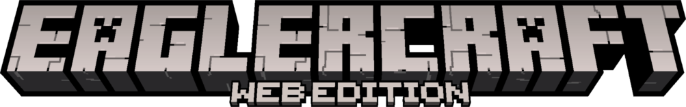

Launchcraft
Web Edition
Joueur invité
Profil local

WEB EDITION
Mods
Aucun mod installé pour le moment.
FAQ
Le launcher fonctionne-t-il sur iPad ?
Oui, l'interface est adaptée aux écrans tactiles et aux petits écrans.
Le jeu est-il intégré au launcher ?
Le bouton Play tente d'afficher le jeu dans la même page. Si le site distant bloque les iframes, les fichiers du jeu devront être hébergés directement dans ce projet.
Installations
Launchcraft fonctionne directement depuis GitHub Pages.
Skins
La gestion des skins sera ajoutée prochainement.
Patch Notes
Version 1.0
Création de l'interface Launchcraft, animation d'introduction et navigation.
Création de l'interface Launchcraft, animation d'introduction et navigation.
Réglages
Crédits
Launchcraft est un projet communautaire non affilié à Mojang ou Microsoft.